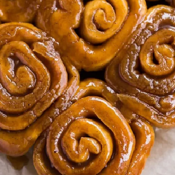

Ingredients
- 4 square flat icing free vegan cinnamon buns
- 2tsp margarine
- 50g Maple Syrup
Instructions
- Cut the cinnamon bun in half cutting through the side separating the top from the bottom.
- Heat a frying pan to medium heat and add 2 tsp of margarine allowing it to melt.
- Set the cinnamon bun pieces cut side down into the pan and fry 2 minutes on each side until crispy.
- Remove from pan and plate pouring maple syrup on top.